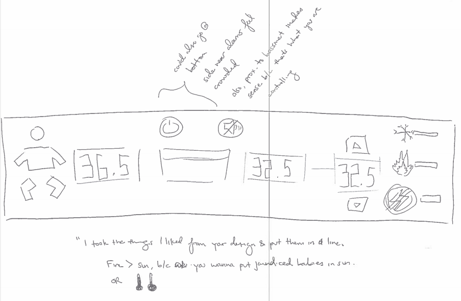

OTTER: NEWBORN WARMER FOR LOW-RESOURCE SETTINGS
About the Project
Duration: September 2016 - June 2017
Partners:
- Medical Technologies & Transfer Services (MTTS) (Hanoi, Vietnam) develops, manufactures, distributes, and troubleshoots low-cost neonatal devices in developing countries.
- Design that Matters (DtM) (Salem, USA) is a boutique design firm specializing in user experience and med tech development.
Newborns are very sensitive to temperature changes, and in low-resource countries particularly, hospitals do not necessarily have the equipment maintain temperature while keeping contamination and infection at bay.
Otter is a durable warmer that streamlines and quickens other treatments by minimizing newborns’ risk of hypothermia and infections.
Our team (bioengineering, design, and business students) was tasked to:
- Make DtM's rudimentary proof-of-concept into a more functional and robust prototype,
- Start the CE Mark certifcation process, and
- Identify future markets for Otter distribution.
My Role: Project / Product Manager
I joined the project in its first year. Our team was brought in as technical expertise to begin pushing the project to completion.
Besides overarching facilitation, my responsibilities included:
- Determine where we would be at the end of each semester (vision),
- Work with subteam leads to set intermediary milestones to reach that goal (strategy), and
- Embody product-led development (execution)
- In order to focus on product reach (impact).
In addition, I frequently took off my PM hat to be a regular team member on whatever subteam needed extra hands the most, not just helping where I could, but doing what it took to get the task done. With my design background, I remained flexible yet impactful. I performed policy and competitive landscape research, conducted stakeholder interviews, analyzed quant and qual data, set and measured heating element performance, and maintained business relationships.
Embedding Stakeholders in the
Development Process
We wanted to challenge the existing global health equipment paradigm. Too often, Western countries would donate equipment without understanding that poorer countries did not necessarily have the infrastructure to properly use said equipment.
Understanding the context in which Otter would be used would help us address that paradigm, and identify and work on features that actively augmented workflow.
Vietnamese healthcare workers

I am pictured (middle). At Yên Minh Hospital
explaining Otter to NICU doctors & nurses.
We visited Vietnam twice: in January and in June, for 10-days each. During each trip, I interviewed Vietnamese NICU and procurement staff to understand how the product would be integrated into hospitals.
In total, we visited 6 hospitals, ranging from urban centers to remote mountain-based hospitals.
Besides contextual questions, we asked NICU staff to:
- Draw their own device interfaces to understand thought processes, and
- Describe the process- and device-based failure points they encountered.
Some learnings:
- Sometimes Procurement could not control what they received because hospitals were forced to accept donations,
- Policy dictated that district hospitals (more common but more resource-poor) pass severe cases to larger, far-less-common provincial hospitals,
- Unfamiliar equipment would not be used as intended due to training and instruction manual shortages
MTTS and DtM: Device Design, Manufacturing, Distribution
MTTS was Otter's manufacturer, distributor, and troubleshooter. DtM was responsible for the original Otter concept, and provided general design counsel. I wrote weekly progress emails to both during the school-year, and MTTS hosted us during our Hanoi trips.
In our numerous workshops with both partners, we learned the following, including:
- How Otter would be priced,
- The CE Mark approval process, and
- MTTS' and DtM's existing equipment suite.
Expediting our Learning Process
As Project Manager, part of my job was to remove roadblocks that would otherwise distract the team. The "quick interviews" are one such example.
To collect usability information, the team responsible for iterating on the device's interface wanted MTTS to interview local hospitals. However, one week turned into two, and the interface subteam was left high-and-dry because of MTTS' scheduling challenges.
The interface subteam wanted to continue waiting for MTTS to resolve scheduling. To counter this unpredictable and indefinite wait, I suggested conducting interviews directly with our fellow college students.
Any job is my job if it helps the team learn and improve. I worked on the interface team, and in two days, my peers and I conducted five usability tests each. For each slide in the deck of interface versions, I asked interviewees to tell me what they thought each feature signified, perform specified actions, and draw their ideal interface.
We convened to combine our learnings and to extract our insights:
- Seperate icons are clearer and glanceable (and therefore more comprehendable),
- Error messaging is currently unclear, and
- Monitoring and warming displays and controls in particular need to be seperate.
With that information, the interface team was able to create an improved, more intuitive interface. Furthermore, we did not lose continue losing time waiting for MTTS, who ended up completely unable to conduct usability interviews.
Conclusion
Because of my product-driven approach, each semester our team produced tangible results to show our Vietnamese client and NICU staff. We went to Vietnam twice, which exceeded our instructors' expectations. The June visit was optional, since the course had ended and I was technically absolved from all course-related duty. But I still went because I wanted to leave the project in tip-top, not just good, shape for our partners as well as the incoming team.